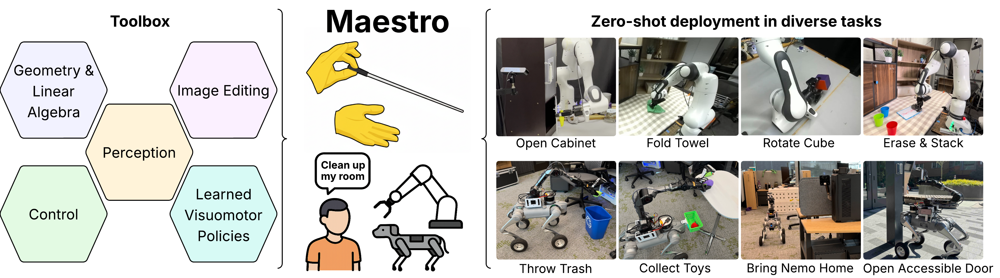
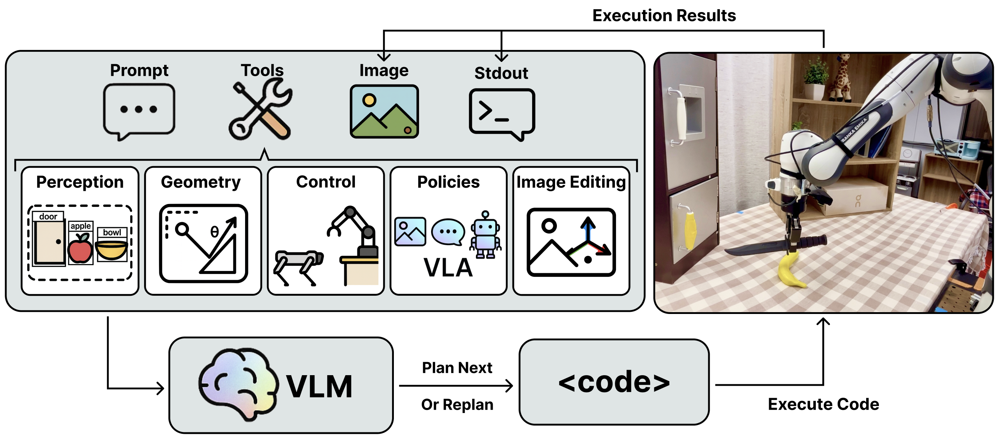
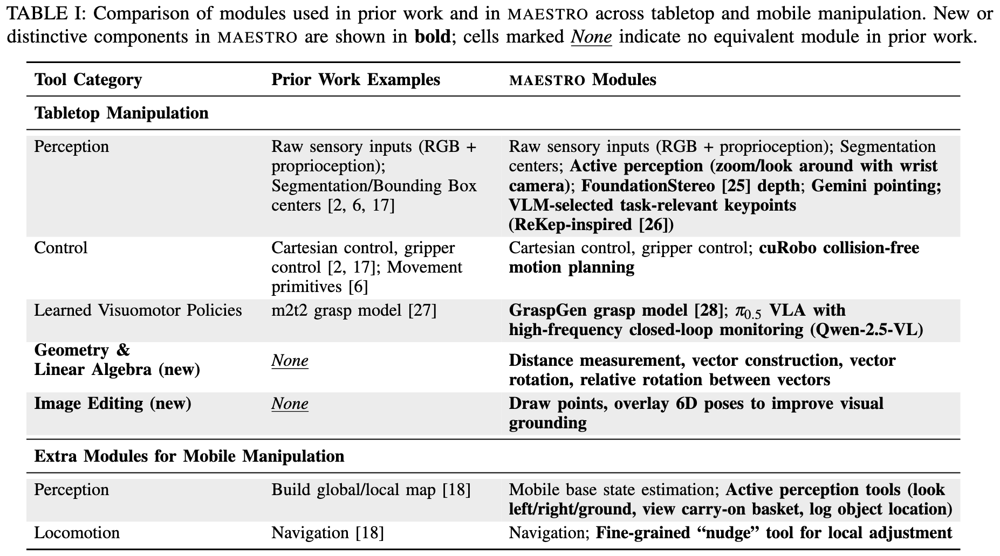
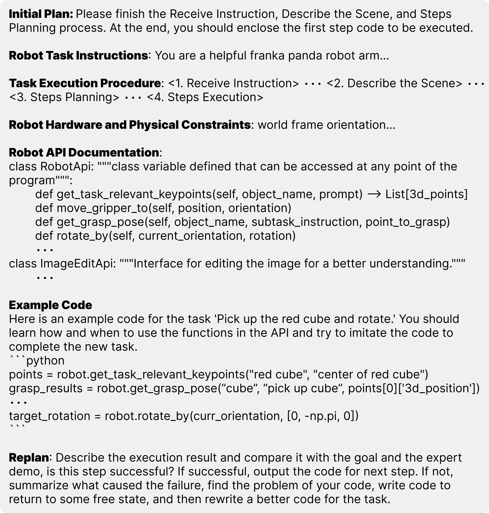
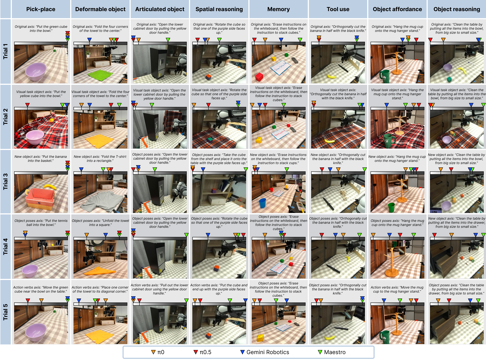
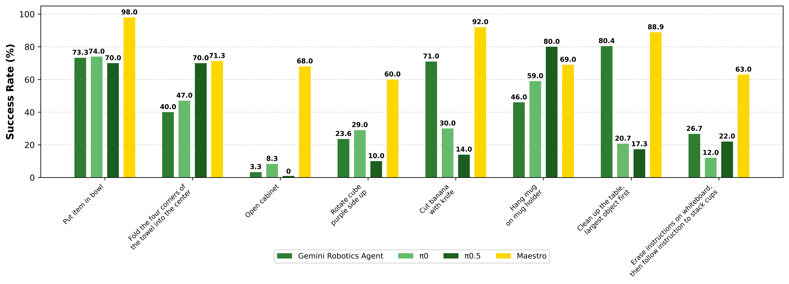
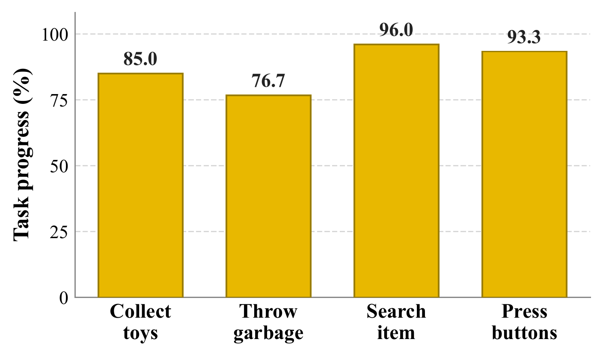
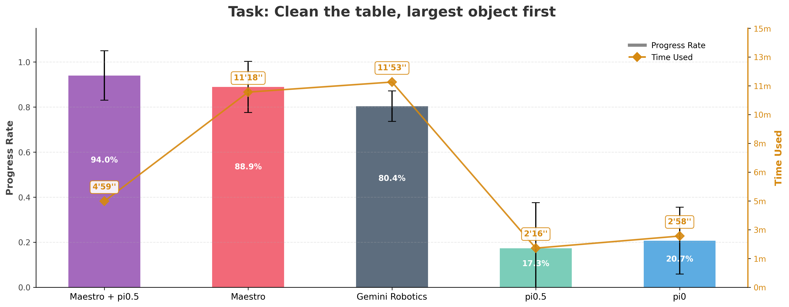
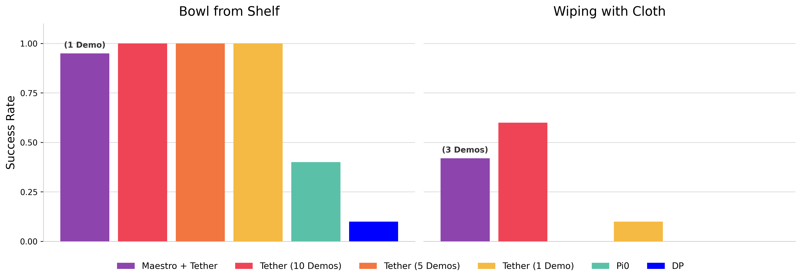

TLDR: We introduce Maestro, a VLM coding agent that composes diverse robotics-related tool modules into programmatic policies. Maestro represents the first competitive modular policy for generalist robot: its streamlined closed-loop interface and extensive tool repertoire allow it to largely surpass today's VLA models on challenging zero-shot manipulation tasks, while remaining interpretable, debuggable, and easily extended to new tools and robot embodiments. It can also improve from a handful of real-world trials via local code edits, and strategically employ VLA models as tools for both speed and performance.

Maestro receives language instruction and leverages a set of tools to complete diverse tasks in a zero-shot setting.
Today's best-explored routes towards generalist robots center on collecting ever larger "observations-in actions-out" robotics datasets to train large end-to-end models, copying a recipe that has worked for vision-language models (VLMs). We pursue a road less traveled: building generalist policies directly around VLMs by augmenting their general capabilities with specific robot capabilities encapsulated in a carefully curated set of perception, planning, control, and learned policy modules, including vision-language-action (VLA) models. In Maestro, a VLM coding agent dynamically composes these modules into a programmatic policy for the current task and scenario. Maestro's architecture benefits from a streamlined closed-loop interface that grants the agent substantial autonomy to monitor, react, and replan without many manually imposed structural constraints, and a comprehensive and diverse tool repertoire. As a result, it achieves substantially stronger zero-shot performance than current general-purpose VLA models in challenging manipulation settings, particularly those underrepresented in their training data. Further, Maestro is easily extensible to incorporate new modules, easily editable to suit new embodiments such as a quadruped-mounted arm, and even easily adapts from minimal real-world experiences through local code edits. Maestro's autonomous real-world trajectories can additionally be leveraged to train fast and robust policies. Together, these results suggest that Maestro provides a practical path toward scaling autonomous robot deployment and data collection in diverse real-world settings.

Given prompt and images, VLM plans by writing and executing code that integrates perception, spatial reasoning, control, learned visuomotor policies, and image editing. Execution results (images and stdout) provide feedback for reacting and replanning, forming a closed-loop perception–action–learning cycle. This enables adaptive long-horizon manipulation, as illustrated in the tabletop example on the right (instruction: Grasp the knife by the handle and cut the banana in the middle).
"Open the lower cabinet door by pulling the yellow door handle."
"Fold the four corners of the towel to the center"
"Erase instructions on the whiteboard, then follow the instruction to stack cubes."
"Rotate the cube so that one of the purple side faces up."
"Put the tennis ball into the bowl."
"Hang the mug cup onto the mug hanger stand."
"Orthogonally cut the banana in half with the black knife."
"Clean the table by putting all the items into the bowl, from big size to small size."
"Open door and enter the building."
"Search for the orange plush ball and return when grasped."
"Trash out the green plush ball into the garbage can."
"Collect all plush toys on the white table"

Maestro framework's strength lies in its comprehensive and hierarchical toolset, which the VLM dynamically programs to execute tasks.
Core Tool Categories
Mobile Manipulation Extensions
For mobile tasks, the toolset is expanded to include robust state estimation (using LiDAR–Inertial Odometry), active perception (e.g., look around, remember object location), and dual-mode locomotion (global navigation and fine-grained nudging). This enables the agent to successfully execute multi-stage, long-horizon tasks, such as transport and exploration, across large workspaces. By effectively programming and coordinating these diverse, high-quality modules, Maestro successfully fuses the semantic intelligence of VLMs with the precision of specialized robotics—a combination essential for achieving superior zero-shot generalization.

A summarized overview of Maestro's system prompt.
Our evaluation protocol is designed for systematic experimentation, adopting the STAR-Gen taxonomy of generalization for robot manipulation. STAR-Gen formalizes testing by creating systematic perturbations relative to a base task. We leverage the STAR-Gen scenario generation tool, prompting Gemini to generate diverse task instances across four key axes: visual changes to task-relevant objects, changes to object poses, changes to action verbs requiring new behavior, and introducing entirely new manipulated objects, This approach ensures that every trial differs substantially and meaningfully from the rest, capturing realistic in-the-wild diversity and providing a rigorous test of Maestro's robustness and adaptability. The table below presents the experimental setup and results comparison for each task trial.

To ensure systematic evaluation, we adopted the STAR-Gen taxonomy of generalization to create five diverse, meaningful task perturbations for each challenge axis, measuring system performance using a task progress score rubric across tabletop (Franka Panda) and mobile (Unitree Go2-W with AgileX PiPER) robot embodiments.
Maestro substantially outperforms all VLA and CaP baselines across challenging manipulation tasks. This success stems from combining the VLM's high-level semantic reasoning with specialized tools for low-level execution precision; while VLA models struggle with out-of-distribution scenarios (like articulated objects) and lack memory, Maestro remains robust and adaptable.

For mobile manipulation, Maestro successfully executes complex, long-horizon tasks across four challenge axes. Performance on long-horizon tasks is bolstered by a cached semantic map for persistent object tracking, though failures occasionally occur due to low-level issues like inaccurate depth or invalid grasp poses. In contrast, active exploration and object affordance reasoning benefit greatly from multi-view replanning and precise keypoint selection, leading to high success rates.

Maestro achieves improved efficiency and performance through the integrated use of a VLM and VLA tool module. The VLM leverages its sophisticated reasoning capability to interpret complex user instructions and provide detailed, accurate observational reasoning. The VLA functions as a fast and powerful "muscle," quickly completing simple, well-trained subtasks such as pick and place. This strategic division of labor allows the Maestro+VLA system to execute complex commands both quickly and accurately.
"Clean the table by putting all the items into the bowl, from big size to small size."

Bowl from Shelf
Wiping with Cloth
We demonstrate Maestro's potential for autonomous data collection when integrated with Tether. Tether provides a framework for warping a demonstration agent (in this case, Maestro) to enable continuous, autonomous task execution and subsequent data logging. The videos above illustrate Maestro operating within the Tether wrapper to successfully complete two distinct manipulation tasks. This closed-loop setup allows Maestro to run autonomously, generating high-quality, diverse data that can be used to further train and improve generalist robotic systems.

@inproceedings{shi2025maestro,
title={Maestro: Orchestrating Robotics Modules with Vision-Language Models for Zero-Shot Generalist Robots},
author={Shi, Junyao and Yang, Rujia and Chao, Kaitian and Wan, Bingqing Selina and Shao, Yifei Simon and Lei, Jiahui and Qian, Jianing and Le, Long and Chaudhari, Pratik and Daniilidis, Kostas and others},
booktitle={NeurIPS 2025 Workshop on Space in Vision, Language, and Embodied AI},
year={2025}
}